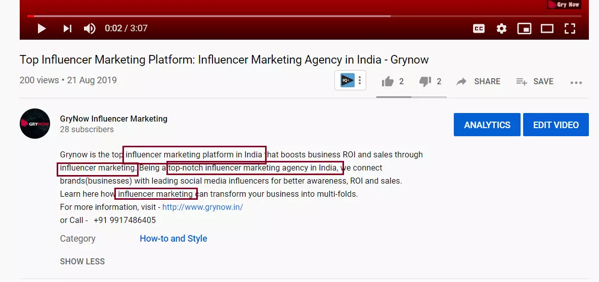
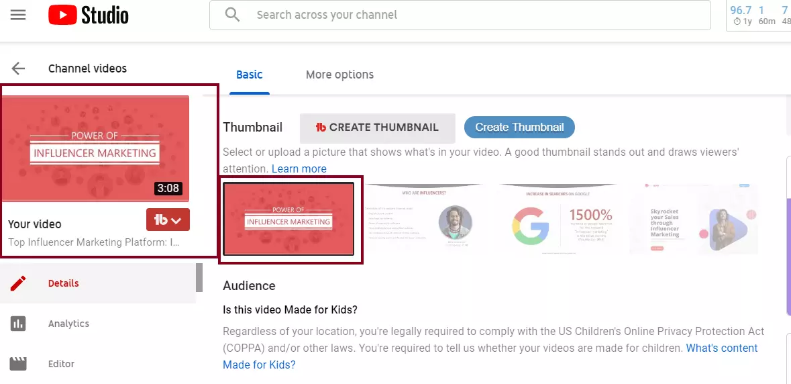
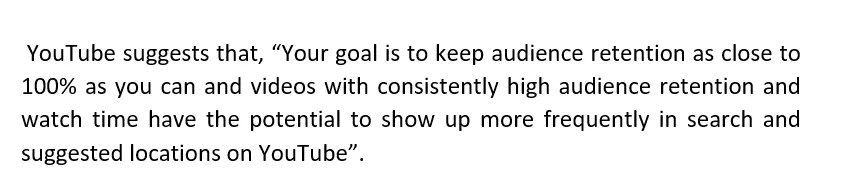

Today, I am going to give the best secrets of Youtube SEO and how to rank your videos in the Youtube search engine in 2021. Let’s dive in.
Youtube has now become BAE for almost everybody present on the internet, whether one wants to know current affairs, news, universe knowledge, studies, problem solving or entertainment or a detailed information about anything in the world. As through video content. We human beings utilize two of our major sense organs – eyes and ears and that’s why we consume and understand the information better, hence each and every one of us wants to become a Youtuber to either earn money through Google AdSense or fame or both. And for the videos to rank better in the Youtube search engine, Youtubers must do Youtube SEO.
With over 400 hours of video content being uploaded to YouTube every single minute, knowing the correct video SEO helps you rank your video among the top videos of your niche.
While search engine optimization sounds like a tricky business, a few simple habits can give you enormous results in form of higher traffic and better ranking of your videos.
Let’s explore the Youtube SEO secrets:
YouTube Video Keyword Research
The YouTube SEO begins with an in-depth research of keywords for your video. Keywords act like seeds and have to be sprinkled naturally throughout your metadata i.e. Title, Meta description, Tags, Content.
The easiest way to find the relevant keywords for ranking the video is itself through the search engine of YouTube. Yes, the YouTube search suggest feature shows the keywords as suggestion under the Youtube search engine’s search bar, these are the phrases which other people are already searching on YouTube. Your job is to search the keywords or phrases according to your niche or related to your video, these keywords can prove to be really helpful by inserting them into your video’s content, Title, Meta description etc.
Pro Tip - While through YouTube search suggest feature you get a lot of keywords but our focus should fall on the keywords which have high search volume and low competition. Put these keywords in Google Adwords – keyword planner tool. Keyword planner will give you the search volume and competition on these keywords. Always select your targeted country accordingly.
Use Google Trends
Google trends allows you to find out what topics / phrases are trending in that particular targeted location
Use Competitor’s Keywords
Another way of finding relevant keywords for your video is through finding the keywords used by your competitor’s popular videos. Go on to their video library and sort their videos by “most popular”. If the video is popular, it must have ranked well or be it in suggested videos. Using chrome extension tools like VidIQ and Tubebuddy, you can easily find out the tags and keywords competitors are using for Youtube SEO and to rank their videos in Youtube search engine. Further, this is the secret of their videos receiving potential traffic. Using these keywords in your video meta description, tags, Title and content will surely help boost the ranking of your videos. This will definitely help in your video marketing.
Optimize Video Title/ Tags/ Description for maximum CTR
After triumphing the first step of finding relevant and powerful keywords for ranking, your next target is optimizing video title, tags and description to maximize the click through rate (CTR).
Youtube Title Tag optimization
Make sure you use your main focus keyword in the video title. It helps Youtube search engine in segregating the category of your video (Your Niche) and definitely helps in YouTube ranking. Phrase your video title as such that it creates the Fear of Missing Out (FOMO) among the viewers, as if they are going to miss out something amazing if they don’t click on your video. Try to use a Call to Action or a Question in the title to increase the eagerness of the viewers to click on your video.
Youtube Meta Tag optimization

The next step would be writing a precise and clear video description. Also, be sure to use few keywords that are naturally placed in the video description. Your video description should only add value to the information you wish to provide to your viewer. It can contain a supplementary information or a proper description of your video. You may also include your website / social media links to leverage your other digital assets too.
Youtube Tags Optimization

Use relevant keywords as tags in your Youtube video’s tags as they also help (Though very very less) in the ranking of your video in Youtube search. Tags let viewers as well as YouTube know what the video is about.
Youtube Thumbnail Optimization
Another aspect that will help you increase your CTR is thumbnail. Always make a custom-made thumbnail instead of letting YouTube generate a random one. A perfect thumbnail is a combination of text and images. You can design thumbnail using simple software like Canva or a hire a professional to make for you on Photoshop / Illustrator etc.
Video optimization through these steps ensures not only your video is discoverable but also viewers click on your video and spend time on it.
Nowadays Youtubers have also option to buy YouTube subscribers that are real, active and organic in nature to increase exposure of your YouTube channel.
Increase Your Audience Retention

Watch Time
YouTube wants people to spend more and more time on its platform through your videos. Hence, Youtube recommends to publish longer videos as they generate more watch time. Videos that are longer, have well optimized Title tags, Tags, Meta tags are ranked better on the search engine of YouTube. And according to Youtube 1000 subscribers and 4000 watch hours of time are required for Youtube channel monetization.
Audience retention means the fraction of time people are watching your video in the total duration of your video. Hence your aim is to maximize audience retention for more watch time.
If a viewer drops your video only after a few seconds, it harms the ranking of your video, therefore, make the first 10-15 seconds of your video very engaging.
Here are a few things you could do to increase your audience retention:
Intro
Design an intro to your video. If you make the first few seconds of your video really engaging, it helps you increase your audience retention.
Summary
Give a quick summary of your video in the beginning of the video. This informs the viewer that they are at the right place.
Loose Ends
Leave loose ends throughout the video. Doing so will keep your viewer engrossed till the end of the video.
Pattern Interrupts
Make use of pattern interrupts. Using simple pattern interrupts like a change in look, a jump cut or a change in camera angle keeps your video fresh and prevents the video from being monotonous.
Your goal as a creator is to attract audience and to keep them on your video for as long as possible. The more your watch time, the better is the YouTube ranking of your video and also help in Youtube video organic reach.
Focus on Audience Interaction and Engagement
Interaction
Audience interaction and engagement is crucial aspect in your Youtube video SEO. Whenever a viewer leaves a comment or a likes your video, this sends a positive feedback to YouTube about your video and YouTube decides that your video is a better result for that query and ultimately improves your video ranking.
Engagement
YouTube observes audience engagement through likes, dislikes, comments, shares and watch time on your video. Always ask viewers to subscribe to your Youtube channel to maintain the viewers to subscribers conversion ratio (a simple way to increase your conversion ratio is to ask your viewers to subscribe).
Pro Tip: Heart your favorite comments to increase engagement! This a feature from YouTube that allows you to heart your favorite comments and whenever you heart a comment, the user gets a notification which makes them more likely to come back to your channel and subscribe. This is the great way to increase subscribers organically.
Reply to Comments
Reply to as many comments as possible, at least in the first few hours after publishing the video. This makes your audience more loyal to your YouTube channel.
To have better audience engagement, a creator should research what the audience wants to watch through behavior analysis. According to YouTube’s Creator Academy, creators should analyze their audience behavior by these factors:
- What they watch
- What they don’t watch
- How much time they spend watching?
- Likes and dislikes
- Not interested’ feedback
By monitoring these few parameters, you can easily improve your audience interaction and behavior as part of your video SEO strategy. The better the interaction, the better would be your video ranking.
Using Closed Captions Feature and Subtitles: The Great Video Optimization Technique
Subtitles and Captions
Creating video subtitles and closed captions is a very rewarding thing you can do to rank your videos among the top videos of your niche. By providing closed captions and subtitles, you make your video keyword rich and helps you get noticed in the Google as well as YouTube.
Naming your video file
Another thing you can do to get better ranking is naming your video file before uploading it to YouTube. Using your video title (comprising of your target keyword) as your file name will not only let the search engine know what the video is about but also help in better ranking on the SERPs.
Pro tip: Google and YouTube actually “listen” what you’re saying in the video. Always say your target keyword in the video. This will help Youtube and Google understand your video better and ultimately contribute to grow your YouTube channel.
Content Quality
Last but not the least, as they say that Content is the king, it is and will always. Curate your content beautifully in terms of its content quality, video quality – Full HD / 4K / 8K etc.
YouTube SEO does not mean following one particular practice to rank your videos in the SERPs. It means following a culmination of best practices, backed by quality content that your viewers would love to watch. Video optimization helps your channel look good in the eyes of YouTube algorithm, which rewards it by boosting your rank in the SERPs. The best way to keep track of your YouTube channel growth is to keep finding your shortcomings from your worst performing videos, and keep working on them to improve.
Hope you have liked the blog, if you know some more secrets, do let us know! Feel free to share this one too.